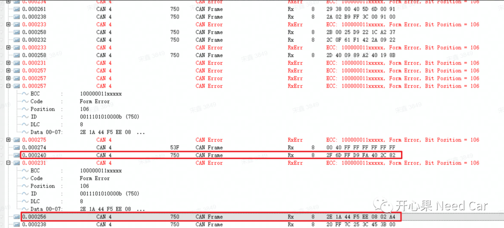
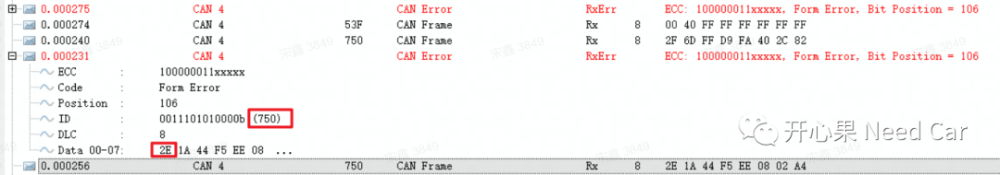
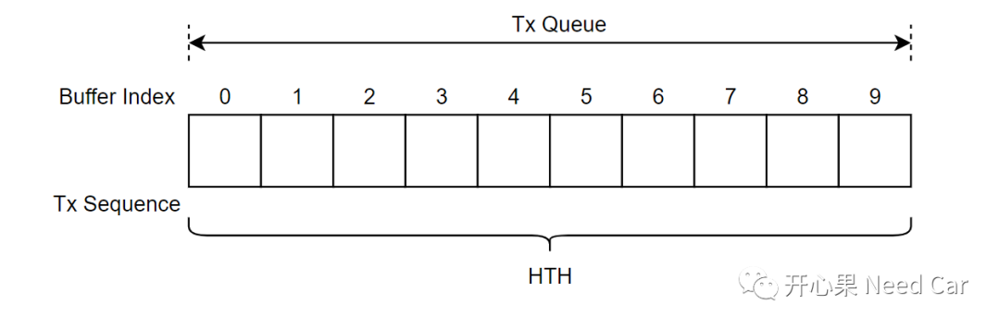
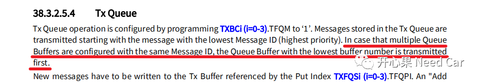
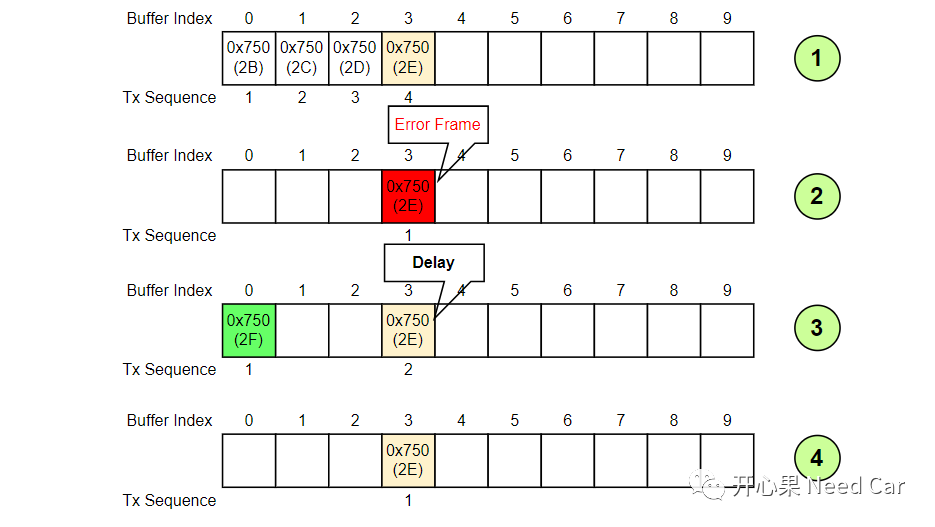
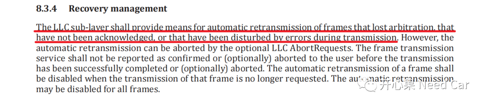
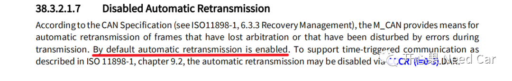
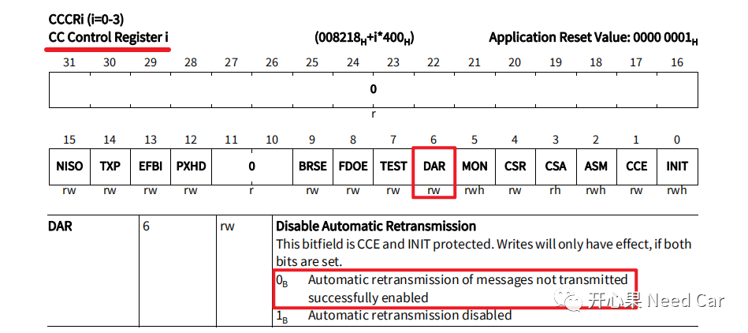

开心果 Need Car · 2022-11-08T10:12:00+08:00 · 微信原文
CAN总线中，采样点是一个容易被开发人员忽视的角色。如果不认真对待，可能会让"你"吃点苦头。本文，聚焦采样点不合理带来的一个工程问题，希望读到此文的朋友，能有所收获！关于采样点，前文讨论过，可以回顾前文CAN通信基础：采样原理。

数据log中，可以看出有大量的错误帧。错误帧和连续帧错序有关联吗？答：有。关于错误帧，不清楚的朋友可以参考前文CAN通信基础：错误帧。在进一步的分析错误帧可以看出，错误帧的CAN ID = 0x750，且错误帧产生在0x2E报文发送过程中，如下所示：

1、Basic CAN配置
关于Basic CAN与Full CAN，可以参考前文CAN通信：Basic CAN与FIFO。本文中，将诊断报文配置成Basic CAN，且CanHwObjectCount ＞1。这意味着什么呢？答：意味着一个HTH（Hardware Transmit Handle）可以有多个硬件缓存区存。即：发送缓冲区的类型为 Tx Queue，如下所示：

2、CAN报文仲裁
我们知道，对于一帧CAN报文，能否发送到CAN BUS，取决于其是否能赢得内部竞争和外部竞争。关于CAN总线的仲裁原理，可以参考前文：CAN总线仲裁原理。对于CAN ID相同的报文，内部如何竞争呢？答：根据Buffer Index，即Buffer Index越小，发送优先级越高，具体解释如下所示：

3、错序的产生
0x750报文是如何产生0x2E和0x2F的错序的呢？如下所示：

4、重传机制



往期精彩回顾